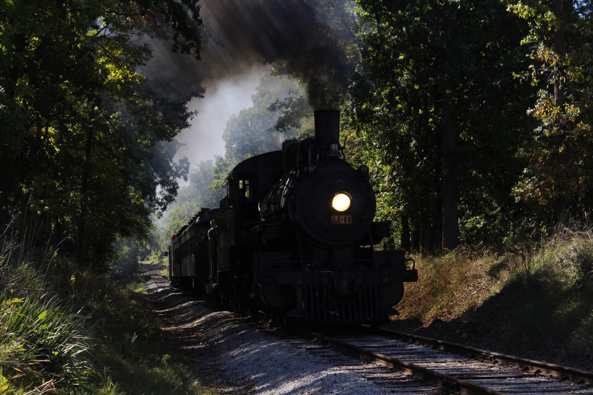

Come ride with us this fall!
Fall is here! We will be offering steam train and diesel rides from September 16th through November 5th. Enjoy fall colors and bring home a pumkin as we layover at the pumkin patch. Prices and schedules for the train trips are listed below. Trains will run rain or shine and steam train trips are subject to change.
Steam Train Rides
Ride behind our 116 year old steam locomotive Monticello and Sangamon Valley #401 and steam through the fall. 401 will be running every other weekend this fall. Child tickets are $20 and Adult tickets are $30. Trips will leave at 9am, 12pm, 2:30pm and 5pm. After the last trip each night there will be a photo shoot with #401.

Ride behind our streamlined diesels through the fall colors. Child tickets are $15 and Adult tickets are $20. Trips will leave at 9am, 12pm, 2:30pm, and 5pm. After the last trip each night there will be a photo shoot with #1189 and #6789.
Take a ride to the pumpkin patch and bring home a pumpkin to carve with your family. This event is great for young kids. Trips run at 9am, 11am, 12pm, and 1pm between September 30th and October 29th. Child tickets are $15 and adult tickets are $20.